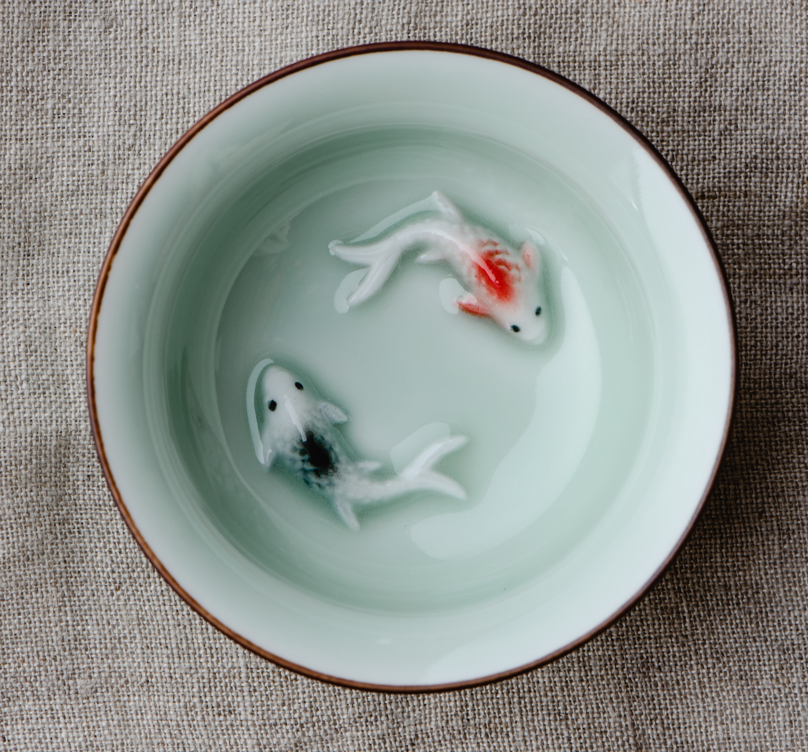
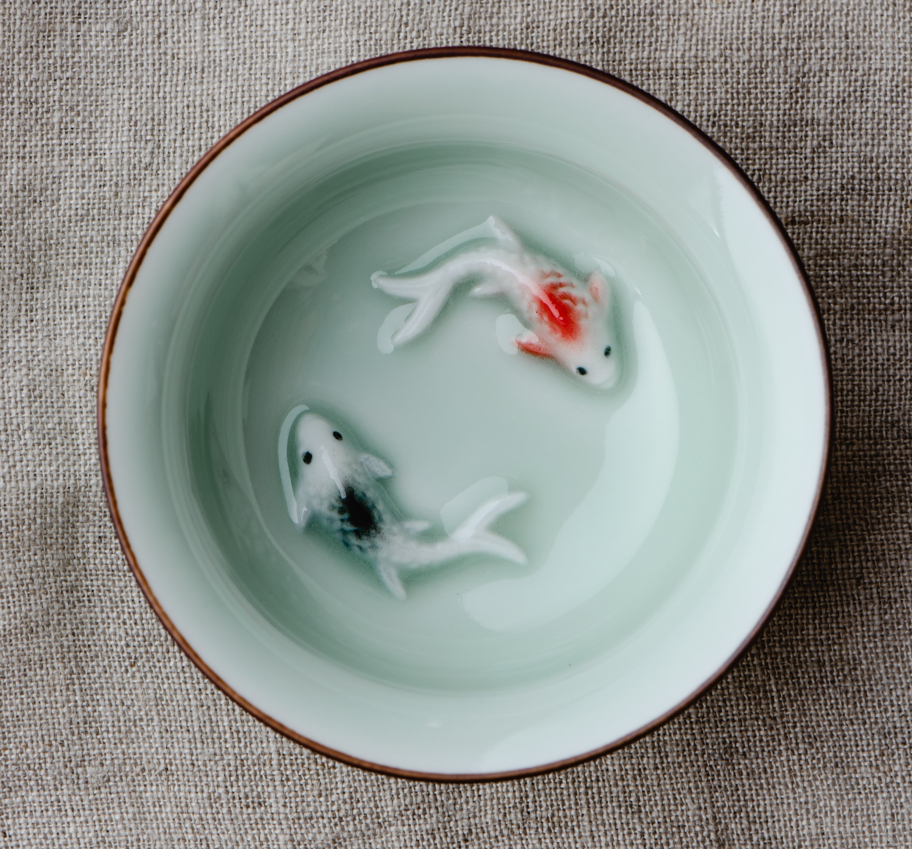
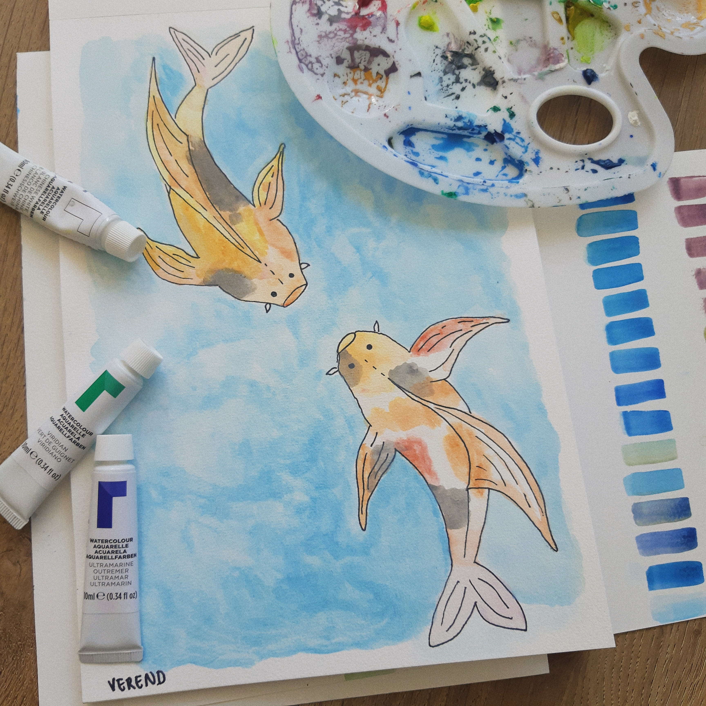

These cute bowls are handmade and very well beloved by the people who has bought them. They are hand painted, with a glass glace. They are perfect for eating ramen, or soups, which are also some of the national dishes in Japan.
Welcome to the wonderful world of Koi fish, the beautiful fish from Japan. Love is the japanese meaning of the word koi, so technically Koi fish are called love fish. They are said to give good fortune to the lovers being surrounded by them.
These cute bowls are handmade and very well beloved by the people who has bought them. They are hand painted, with a glass glace. They are perfect for eating ramen, or soups, which are also some of the national dishes in Japan.
Come today with your kids and enjoy drawing while watching the Koi fish, as well as enjoying the garden area. A very relaxing experience indeed.
This beautiful experience can be found in a small village outside of Copenhagen. Here you get to see a beautiful garden, as well as the huge pond area. Where you and your family get to enjoy an relaxing day together.
Support our local shop. We have a lot of Koi merchindise and the famously handmade bowls. All the money goes into keeping the park beautiful and the fish happy.
We do not at the moment offer any refunds unless the purchase was damaged within 24 hours or has a defect.